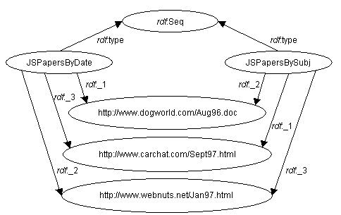
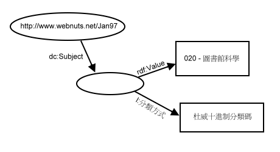
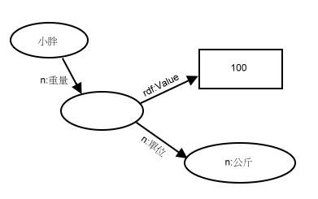

| 上一頁(P) | 上一層(T) | 下一頁(N) |
| 6. 資源描述架構正式的語法定義 | 8. 感謝 |
單一資源可以是一個或多個屬性的屬性值，也就是說，這個資源可做為一個或多個陳述式的賓語，因此可以有一個或多個弧指到這些賓語。像是有好幾份文件都共同擁有單一網頁而且可能在網站地圖中參考許多次，或是可以對相同的資源指定不同的順序。
請考慮這樣的例子，說明某位作者收集的工作，分別經由出版日期與主題文字的英文字母順序排序：
<RDF xmlns="http://www.w3.org/1999/02/22-rdf-syntax-ns#">
<Seq ID="JSPapersByDate">
<li resource="http://www.dogworld.com/Aug96.doc"/>
<li resource="http://www.webnuts.net/Jan97.html"/>
<li resource="http://www.carchat.com/Sept97.html"/>
</Seq>
<Seq ID="JSPapersBySubj">
<li resource="http://www.carchat.com/Sept97.html"/>
<li resource="http://www.dogworld.com/Aug96.doc"/>
<li resource="http://www.webnuts.net/Jan97.html"/>
</Seq>
</RDF>
可以看到，這個範例也使用了預設的名稱空間宣告語法，因此把名稱空間的前綴字省略了。
完整說明
圖13：兩個序列共同擁有相同的值
為了進一步解釋 aggregate，請考慮這樣的一個例子。有份文件有兩個作者依照作者姓氐的英文字母順序排列，而文件的標題指定兩種語言，並且在網路上有兩個相等的位置：
<rdf:RDF
xmlns:rdf="http://www.w3.org/1999/02/22-rdf-syntax-ns#"
xmlns:dc="http://purl.org/metadata/dublin_core#">
<rdf:Description about="http://www.foo.com/cool.html">
<dc:Creator>
<rdf:Seq ID="CreatorsAlphabeticalBySurname">
<rdf:li>Mary Andrew</rdf:li>
<rdf:li>Jacky Crystal</rdf:li>
</rdf:Seq>
</dc:Creator>
<dc:Identifier>
<rdf:Bag ID="MirroredSites">
<rdf:li rdf:resource="http://www.foo.com.au/cool.html"/>
<rdf:li rdf:resource="http://www.foo.com.it/cool.html"/>
</rdf:Bag>
</dc:Identifier>
<dc:Title>
<rdf:Alt>
<rdf:li xml:lang="en">The Coolest Web Page</rdf:li>
<rdf:li xml:lang="it">Il Pagio di Web Fuba</rdf:li>
</rdf:Alt>
</dc:Title>
</rdf:Description>
</rdf:RDF>
這個例子同時解釋了三種集合的用法，建立者的順序認為是有意義的，所以用 Sequence 容器處理他們。網路的兩個位置是相等的，順序並不重要，因此使用 Bag 容器。因為文件只能有一個標題，而標題有兩個變數，所以使用 Alternative 容器。
注意阿：上述的用法在許多情況下是不可能的，也就是不能在不同的語言中之選擇偏好的語言，所有語言都應認嚴格限制為相等的。所以說，對於這些描述，作者應該使用 Bag 容器而不是 Alt 容器。
本質上來說，資源描述架構資料模型只支援布林關係。也就是說，某個陳式述可以說明兩個資源之間的關係。在下列的例子中，會示範建議的方法在資源描述架構中表示 higher arity 關係，這只使用布林關係而以。建議的技術是使用一種中繼資源再加上這個屬性的額外屬性以維持資源間的關係。有一個例子，請考慮有一篇 John Smith 最近所表示文章的主題 -- 圖書館科學。我們可以使用杜威十進制分類碼為圖書館科學進行文章的分類。杜威十進制分類碼完全不只是主題類別方案，而是處理類別系統關係識別一個額外的資源，這個資源可用來做為一個主題屬性的屬性值以及為這個資源做註解附上一個額外的屬性，這可識別使用的類別方案。這在 2.3 節有說明，資源描述架構核心包含一個 value 屬性以指示主關係的最重要的值。產生的圖可能看起來像這樣：
 完整說明
圖14：三元關係
以資源描述架構表示可能為：
<RDF
xmlns="http://www.w3.org/1999/02/22-rdf-syntax-ns#"
xmlns:rdf="http://www.w3.org/1999/02/22-rdf-syntax-ns#"
xmlns:dc="http://purl.org/dc/elements/1.1/"
xmlns:l="http://mycorp.com/schemas/my-schema#">
<Description about="http://www.webnuts.net/Jan97.html">
<dc:Subject
rdf:value="020 - 圖書館科學"
l:分類方式="杜威十進制分類碼"/>
</Description>
</RDF>
Note: In the example above two namespace declarations exist for the same namespace. This is frequently needed when default namespaces are declared so that attributes that do not come from the namespace of the element may be specified, as is the case with the rdf:value attribute in the dc:Subject element above.
通常使用這種 higher-arity 的能力是當處理測量單位時。個人的體重不只是像是 100 的數字，還包含測量所使用的單位。也就是說，我們可能使用磅或公斤。我們可以使用一個額外的弧做為一個關係來記錄小胖是一位身材壯碩、體格魁梧的男士這事實：
 完整說明
圖15：使用三元關係做為測量單位
以資源描述架構表示可能為：
<RDF
xmlns="http://www.w3.org/1999/02/22-rdf-syntax-ns#"
xmlns:rdf="http://www.w3.org/1999/02/22-rdf-syntax-ns#"
xmlns:n="http://www.nist.gov/units/">
<Description about="小胖">
<n:重量 rdf:parseType="Resource">
<rdf:value>100</rdf:value>
<n:單位 rdf:resource="http://www.nist.gov/units/公斤"/>
</n:重量>
</Description>
</RDF>
所提供的資源"公斤"定義在 NIST 詞彙描述中，它的統一資源識別符號為 http://www.nist.gov/units/公斤。
都柏林核心中繼資料希望以類似圖書管的卡式目錄手法，容易地發現電子資源。以下的範例簡單地用資源描述架構描述一組資源，而所用的詞彙定義在都柏林核心Initiative。注意：以下的範例所使用的特定都柏林核心之資源描述架構的詞彙並不是官方版本，而都柏林核心 Initative 才是官方的參考資料。
下以是一個用都柏林核心的屬性表示一個網站首頁的描述：
<rdf:RDF
xmlns:rdf="http://www.w3.org/1999/02/22-rdf-syntax-ns#"
xmlns:dc="http://purl.org/dc/elements/1.1/">
<rdf:Description about="http://home.kimo.com.tw/citybjc">
<dc:title>W3C文件翻譯計畫</dc:title>
<dc:description>目的是翻譯各種W3C的規格書</dc:description>
<dc:publisher>彭建翔</dc:publisher>
<dc:date>2002-9-21</dc:date>
<dc:subject>
<rdf:Bag>
<rdf:li>最新消息</rdf:li>
<rdf:li>W3C主計畫</rdf:li>
<rdf:li>有用的資源</rdf:li>
<rdf:li>個人簡介</rdf:li>
</rdf:Bag>
</dc:subject>
<dc:type>Text</dc:type>
<dc:format>text/html</dc:format>
<dc:language>zh-TW</dc:language>
</rdf:Description>
</rdf:RDF>
第二個以平面雜誌為例。
<rdf:RDF
xmlns:rdf="http://www.w3.org/1999/02/22-rdf-syntax-ns#"
xmlns:dc="http://purl.org/dc/elements/1.1/"
xmlns:dcq="http://purl.org/metadata/dublin_core_qualifiers#">
<rdf:Description about="http://www.dlib.org/dlib/may98/05contents.html">
<dc:title>
DLIB Magazine - The Magazine for Digital Library Research- May 1998
</dc:title>
<dc:description>
D-LIB magazine is a monthly compilation of
contributed stories, commentary, and briefings.
</dc:description>
<dc:contributor rdf:parseType="Resource">
<dcq:AgentType
rdf:resource="http://purl.org/metadata/dublin_core_qualifiers#Editor"/>
<rdf:value>Amy Friedlander</rdf:value>
</dc:contributor>
<dc:publisher>Corporation for National Research Initiatives</dc:publisher>
<dc:date>1998-01-05</dc:date>
<dc:type>electronic journal</dc:type>
<dc:subject>
<rdf:Bag>
<rdf:li>library use studies</rdf:li>
<rdf:li>magazines and newspapers</rdf:li>
</rdf:Bag>
</dc:subject>
<dc:format>text/html</dc:format>
<dc:identifier>urn:issn:1082-9873</dc:identifier>
<dc:Relation rdf:parseType="Resource">
<dcq:RelationType
rdf:resource="http://purl.org/metadata/dublin_core_qualifiers#IsPartOf"/>
<rdf:value resource="http://www.dlib.org"/>
</dc:relation>
</rdf:Description>
</rdf:RDF>
第三個以前一個範例指定雜誌裡的文件為例。
<rdf:RDF
xmlns:rdf="http://www.w3.org/1999/02/22-rdf-syntax-ns#"
xmlns:dc="http://purl.org/metadata/dublin_core#"
xmlns:dcq="http://purl.org/metadata/dublin_core_qualifiers#">
<rdf:Description about=
"http://www.dlib.org/dlib/may98/miller/05miller.html">
<dc:title>An Introduction to the Resource Description Framework</dc:title>
<dc:creator>Eric J. Miller</dc:creator>
<dc:description>The Resource Description Framework (RDF) is an
infrastructure that enables the encoding, exchange and reuse of
structured metadata. rdf is an application of xml that imposes needed
structural constraints to provide unambiguous methods of expressing
semantics. rdf additionally provides a means for publishing both
human-readable and machine-processable vocabularies designed to
encourage the reuse and extension of metadata semantics among
disparate information communities. the structural constraints rdf
imposes to support the consistent encoding and exchange of
standardized metadata provides for the interchangeability of separate
packages of metadata defined by different resource description
communities. </dc:description>
<dc:publisher>Corporation for National Research Initiatives</dc:publisher>
<dc:subject>
<rdf:Bag>
<rdf:li>machine-readable catalog record formats</rdf:li>
<rdf:li>applications of computer file organization and
access methods</rdf:li>
</rdf:Bag>
</dc:subject>
<dc:rights>Copyright @ 1998 Eric Miller</dc:rights>
<dc:type>Electronic Document</dc:type>
<dc:format>text/html</dc:format>
<dc:language>en</dc:language>
<dc:relation rdf:parseType="Resource">
<dcq:RelationType
rdf:resource="http://purl.org/metadata/dublin_core_qualifiers#IsPartOf"/>
<rdf:value resource="http://www.dlib.org/dlib/may98/05contents.html"/>
</dc:relation>
</rdf:Description>
</rdf:RDF>
Note: Schema developers may be tempted to declare the values of certain properties to use a syntax corresponding to the XML Namespace qualified name abbreviation. We advise against using these qualified names inside property values as this may cause incompatibilities with future XML datatyping mechanisms. Furthermore, those fully versed in XML 1.0 features may recognize that a similar abbreviation mechanism exists in user-defined entities. We also advise against relying on the use of entities as there is a proposal to define a future subset of XML that does not include user-defined entities.
當屬性值是一個包含 XML 標記的字串，下列的語法可用來告訴資源描述架構解釋元件說不要解釋標記，而是當做屬性值的一部份。更準確地描述結果值並不會在這份文件加以說明。
下以的例子中，Title 屬性的屬性值是一個包含一些 MathML 標記的字串。
<rdf:Description
xmlns:rdf="http://www.w3.org/1999/02/22-rdf-syntax-ns#"
xmlns:dc="http://purl.org/dc/elements/1.1/"
xmlns="http://www.w3.org/1998/Math/MathML"
rdf:about="http://mycorp.com/papers/NobelPaper1">
<dc:Title rdf:parseType="Literal">
Ramifications of
<apply>
<power/>
<apply>
<plus/>
<ci>a</ci>
<ci>b</ci>
</apply>
<cn>2</cn>
</apply>
to World Peace
</dc:Title>
<dc:Creator>David Hume</dc:Creator>
</rdf:Description>
網路內容選擇平台是一個W3C正式規格書，是用來交換網頁內容及其它資料的描述。網路內容選擇平台是資源描述架構的始祖並且它是一個明確要求資源描述架構可以用網路內容選擇平台標籤表達任何事物。The
Here is an example of how a PICS label might be expressed in RDF form. Note that work to re-specify PICS itself as an application of RDF may follow the completion of the RDF specification, thus the following example should not be considered an authoritative example of a future PICS schema. This example comes directly from [PICS]. Note that a PICS Rating Service Description is exactly analogous to an RDF Schema; the categories described in such a Ratings Service description file are equivalent to properties in the RDF model.
<rdf:RDF
xmlns:rdf="http://www.w3.org/1999/02/22-rdf-syntax-ns#"
xmlns:pics="http://www.w3.org/TR/xxxx/WD-PICS-labels#"
xmlns:gcf="http://www.gcf.org/v2.5">
<rdf:Description about="http://www.w3.org/PICS/Overview.html" bagID="L01"
gcf:suds="0.5"
gcf:density="0"
gcf:color.hue="1"/>
<rdf:Description about="http://www.w3.org/PICS/Underview.html" bagID="L02"
gcf:subject="2"
gcf:density="1"
gcf:color.hue="1"/>
<rdf:Description aboutEach="#L01"
pics:by="John Doe"
pics:on="1994.11.05T08:15-0500"
pics:until="1995.12.31T23:59-0000"/>
<rdf:Description aboutEach="#L02"
pics:by="Jane Doe"
pics:on="1994.11.05T08:15-0500"
pics:until="1995.12.31T23:59-0000"/>
</rdf:RDF>
Note that aboutEach is used to indicate that the PICS label options refer to the individual (rating) statements and not to the container in which those statements happen to be supplied.
[PICS] also defines a type called a generic label. A PICS generic label is a label that applies to every page within a specified portion of the Web site.
Below is an example of how a PICS generic label would be written in RDF, using the aboutEachPrefix collection constructor. This example is drawn from the "Generic request" example in Appendix B of [PICS]:
<rdf:RDF
xmlns:rdf="http://www.w3.org/1999/02/22-rdf-syntax-ns#"
xmlns:pics="http://www.w3.org/TR/xxxx/WD-PICS-labels#"
xmlns:ages="http://www.ages.org/our-service/v1.0/">
<rdf:Description aboutEachPrefix="http://www.w3.org/WWW/" bagID="L03"
ages:age="11"/>
<rdf:Description aboutEach="#L03"
pics:by="abaird@w3.org"/>
</rdf:RDF>
The property age with the value "11" appears on every resource whose URI starts with the string "http://www.w3.org/WWW/". The reified statement corresponding to each such statement ("The age of [I] is 11") has a property stating that "abaird@w3.org" was responsible for creating those statements.
RDF 合呼 XML 語法，當使用者代理程式順從 HTML 無效文件錯誤處理的提議時，HTML 文件很適合包含 RDF 內容。當 HTML 文件包含某一部份的 RDF 時，某些瀏覽器會呈現任何可揭露的字串內容。可揭露的字串內容是出現 ">" 結束標籤及下一行 "<" 開始標籤之間的任何字串。一般來說，多個連續的空白字元(包含 end-of-line 字元)都會以單一的空白呈現。
The RDF abbreviated syntax can frequently be used to write property values that are strings in XML attribute form and leave only whitespace as exposed content. For example, the first part of the Dublin Core example from Section 7.4. could be written as:
<rdf:RDF
xmlns:rdf="http://www.w3.org/1999/02/22-rdf-syntax-ns#"
xmlns:dc="http://purl.org/dc/elements/1.1/">
<rdf:Description about="http://home.kimo.com.tw/citybjc/"
dc:title="阿彭的個人網頁"
dc:description="阿彭的個人網頁提供阿彭最近的概況"
dc:publisher="彭建翔"
dc:date="2002-12-25"/>
</rdf:RDF>
Rewriting to avoid exposed content will work for most common cases. One common but less obvious case is container descriptions. Consider the first part of the example in Section 7.2.:
<rdf:RDF
xmlns:rdf="http://www.w3.org/1999/02/22-rdf-syntax-ns#"
xmlns:dc="http://purl.org/dc/elements/1.1/">
<rdf:Description about="http://www.foo.com/cool.html">
<dc:creator>
<rdf:Bag ID="Creators">
<rdf:li>小強</rdf:li>
<rdf:li>小明</rdf:li>
</rdf:Seq>
</dc:creator>
</rdf:Description>
</rdf:RDF>
如果要重新寫成沒有揭露的內容，可以使用下列的形式：
<rdf:RDF
xmlns:rdf="http://www.w3.org/1999/02/22-rdf-syntax-ns#"
xmlns:dc="http://purl.org/dc/elements/1.1/">
<rdf:Description about="http://www.foo.com/cool.html">
<dc:creator>
<rdf:Bag ID="Creators"
rdf:_1="小強"
rdf:_2="小明"/>
</dc:creator>
</rdf:Description>
</rdf:RDF>
Note here that the li element cannot be used as an attribute due to the XML rule forbidding multiple occurrences of the same attribute name within a tag. Therefore we use the explicit RDF Ord properties; in effect manually expanding the li element.
以下是一份完整的超連結文字標記語言文件，該文件包含描述文件本身的資源描述架構中繼資料：
<html>
<head>
<rdf:RDF
xmlns:rdf="http://www.w3.org/1999/02/22-rdf-syntax-ns#"
xmlns:dc="http://purl.org/dc/elements/1.1/">
<rdf:Description about="">
<dc:creator>
<rdf:Bag ID="Creators"
rdf:_1="小強"
rdf:_2="小明"/>
</dc:creator>
</rdf:Description>
</rdf:RDF>
</head>
<body>
<P>這份文件沒有什麼錯誤。</P>
</body>
</html>
只要是符合超連結文字標記語言3.2版的瀏覽器都應該可以接受上方的超連結文件標記語言文件，並且之後版本的瀏覽器應該只會顯示"This is fine document"這些字。